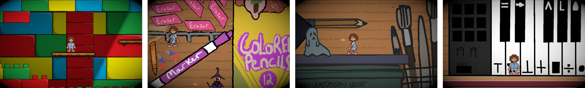
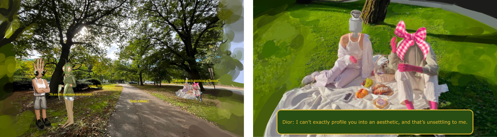
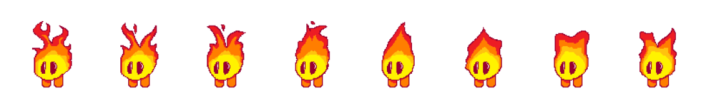

My passion lies in creating meaningful experiences that inspire reflection and foster connection.
From a young age, I've been passionate about creating art inspired by the many facets of my life. Now, as a Computer Science and Design student at Northeastern University, I'm exploring the powerful intersection between art and technology and the ways they can elevate one another. With a minor in Writing, my interest in storytelling drives me to craft digital experiences that spark reflection and inspire thoughtful conversations. As I deepen my skills in Java and other programming languages, my goal is to create interactive experiences that captivate users and encourage them to see themselves–and the world–through a new lens.
<<<<<<< Updated upstream =======The Latest
I've recently wrapped up my six-month co-op at Northeastern University Information Technology Services, and I'm filled with gratitude for everything I learned and accomplished. See my poster below to learn about what skills I gained this cycle!
 >>>>>>> Stashed changes
>>>>>>> Stashed changes
Languages
- Java
- HTML / CSS
- C#
- JavaScript
Platforms & Tools
- IntelliJ
- Rider
- Processing
- Unity
- Eclipse
- VSCode
Systems
- macOS
PROJECTS
Note: some of my GitHub repositories are private to preserve the integrity of my code. If you would like to see my code, please email me and I'll grant you access to it! Thx!
Childhood Dream
I coordinated with a group of four peers to design and construct a nostalgic 2d platform game exploring themes of growing up and revisiting your childhood memories. Compatible only on desktop screens.
Touching Grass
To further my HTML skills, I programmed a website hosting a game I designed for Generation Z and Alpha, exploring and critiquing growing up with the Internet, its volatility, and its tendency to radicalize & sensationalize everything. I am currently developing a zine expanding on this concept and characters.
Flame Escape
Exercising my prototyping with code skills, I created a simple game about a little sentient flame who is stuck in the middle of a rainstorm. The flame must avoid the falling raindrops to survive!
Technical Skills
- Adobe Illustrator
- Adobe Photoshop
- InDesign
- Figma
Design Skills
- User Research
- Wireframing
- Prototyping
- Usability Testing
PROJECTS
BrewIt

Exploring the translation from an analog interaction (making coffee with a coffee machine) to a digital interface. How does one replicate the user's experience of something physical within a digital space? To tackle this question, I designed BrewIt, a mobile app based off Netflix's UI that lets the user browse and brew coffee.
Note Mode - A Canvas Intervention

We are constantly reading, and reading all different types of media. Note Mode is a feature I designed and prototyped for the platform Canvas, aiming to enhance the reading experience of college students.
BookNook

Make a game out of reading books with my concept app BookNook! Track the books have/will read, their respective ratings, and your thoughts on them through a goal-achievement-based system. Add your friends to see each other's reading achievements, and leave little comments about whatever they're reading!
Typeface Posters

A pair of informational posters on the typefaces Didot & Helvetica and their respective backgrounds.
[i also post my art on instagram!]
![instagram!]](https://www.instagram.com/beal.jpg){kind=link}